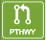

The action buttons apply to specific data types or multiple data types, depending on the operation. Below is a description of each action button, organized by their application.
General purpose
Hide: Hides the right-hand side Details Pane (toggles between Hide and Show).
Show: Shows (unhides) the right-hand side Details Pane (toggles between Hide and Show).
Download: Downloads the selected items (rows).
Copy: Copies the selected items to the clipboard.
Group: Opens a pop-up window to enable adding the selected items to an existing or new group in the private workspace.
Features
Feature: Displays the Feature Page for the selected feature. Available only if a single feature is selected.
Features: Displays the Features Table for the selected features. Available only if multiple features are selected.
FASTA: Provides the FASTA DNA or protein sequence for the selected feature(s).
ID Mapping: Provides the option to map the selected feature(s) to multiple other idenfiers, such as RefSeq and UniProt.
MSA: Launches the Multiple Sequence Alignment (MSA) tool and aligns the selected features by DNA or protein sequence in an interactive viewer.

Pathway: Displays the Pathway Summary Table containing a list of all the pathways in which the selected features are found.
Workspace
Venn Diagram: Displays an interactive Venn diagram showing the intersection of up to 3 groups. Available only when more than one group is selected.
Share Folder: Allows sharing with other registered users.
Delete: Deletes the selected items (rows).
Rename: Allows renaming the selected item. Available only if a single item is selected.
Move: Allows moving of the selected item(s) into another folder in the Workspace.
Edit Type: Allows changing the data type of the selected item, thus changing how the Workspace interprets the item.